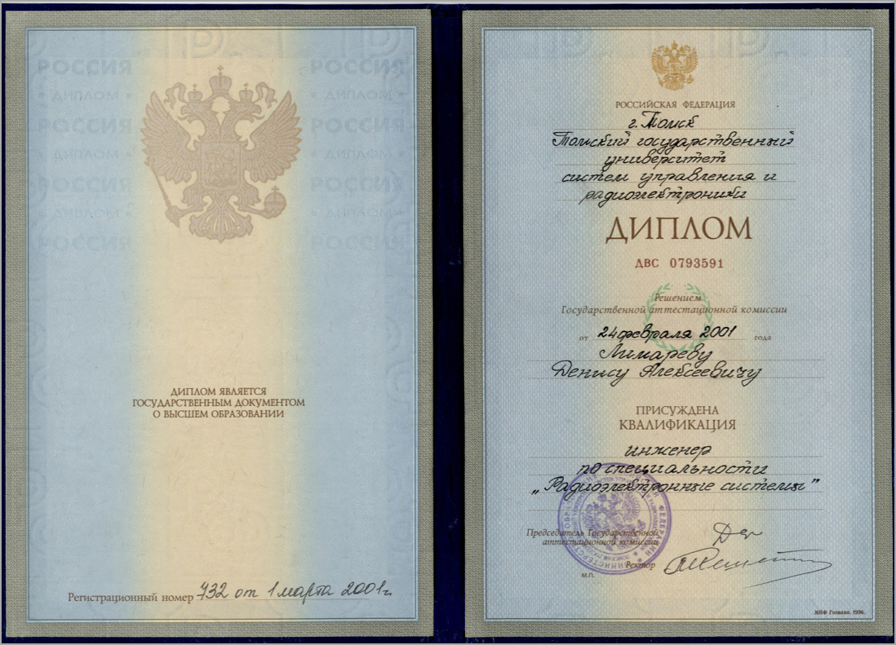
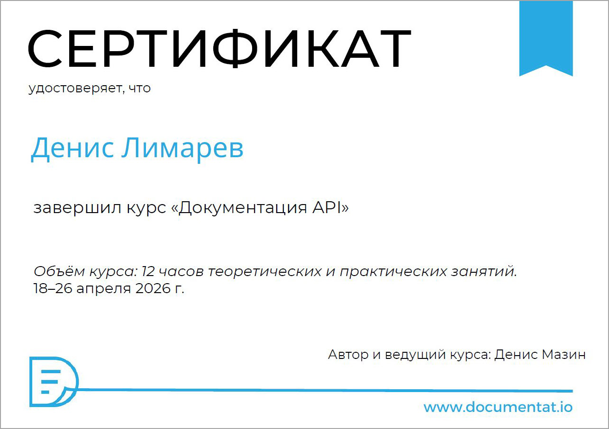
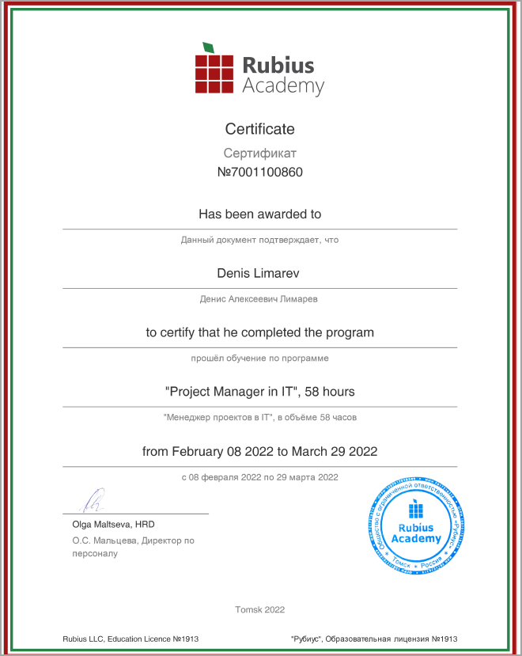
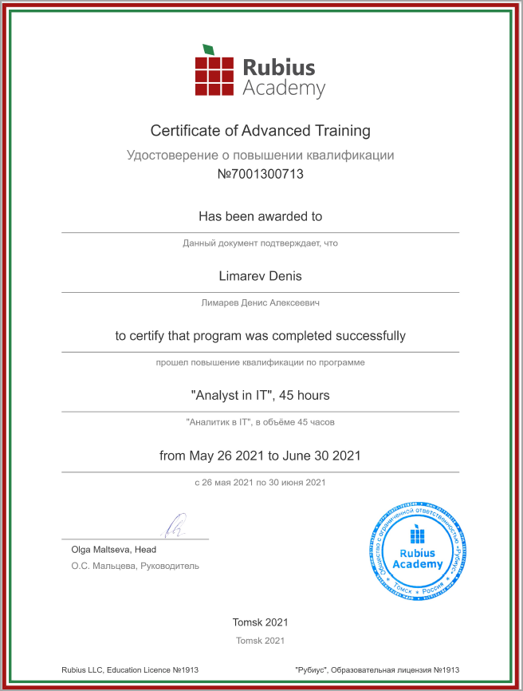
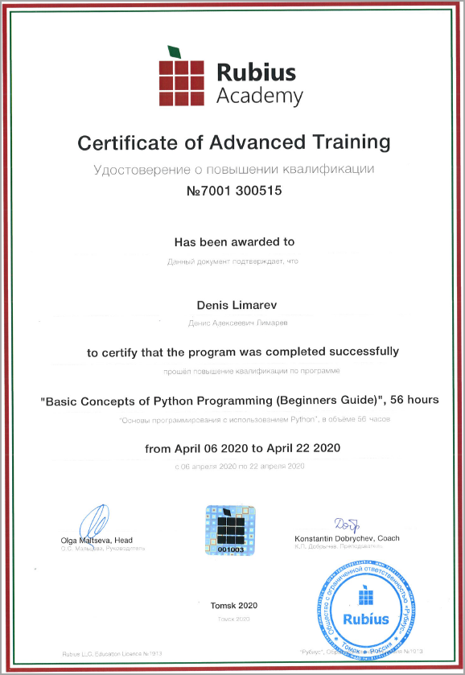

Примеры моих работ
Общие сведения
Внимание!
Все сведения предоставлены только для ознакомления сотрудников HR-служб и коллег. Чтобы использовать любую информацию из этого источника в любых других целей, необходимо получить письменное разрешение от автора, обратившись к нему по электронной почте: limarev.da@gmail.com
Денис Лимарев
Работаю техническим писателем с 2022 года, до этого трудился в IT-сфере на различных должностях с 2009 года.
Закончил в 2001 году ТУСУР, Радиотехнический факультет, инженер-системотехник по специальности «Радиоэлектронные системы и комплексы».
Сертификаты дополнительных курсов представлены в разделе Дипломы и сертификаты.
Женат, двое детей, люблю горы, интеллектуальные игры и узнавать что-то новое. Проживаю в городе Томске. Коммуникабелен, легко нахожу общий язык с коллегами. Благодаря тому, что с 2009 года в IT-сфере и много лет работал системным администратором, быстро вхожу в любой технологический процесс разработки ПО, хорошо ориентируюсь в software и hardware-оборудовании. Опыт работы заместителем руководителя и начальником отдела технической документации позволяет мне эффективно работать на любой должности с большой ответственностью.
Был докладчиком на двух конференциях Techwrite Days:
- 2025 год, Санкт-Петербург. Найти и не терять! Поиск техрайта в команду: квест с открытым финалом.
- 2026 год, Москва. Имбовый портал документации на MkDocs: Markdown, Docs as Code и CD. Что сегодня и что завтра.
Резюме
Примеры работ
-
Пример пользовательской документации в парадигме Docs as Code: Руководство администратора. Веб-интерфейс. Исходные документы в формате Markdown, публикация с помощью MkDocs, используется шаблонизатор Ninja.
-
Пример документации API: Описание API DOUMENTAT.IO. Спецификация API выполнена в формате YAML по версии OPENAPI 3.0.0. Публикация с помощью MkDocs.
-
Техническое описание (Datasheet) в формате PDF.
Дипломы и сертификаты




